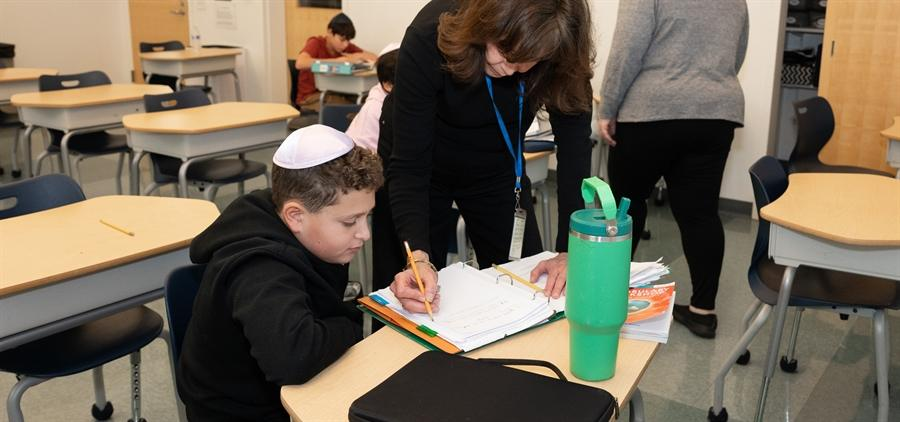
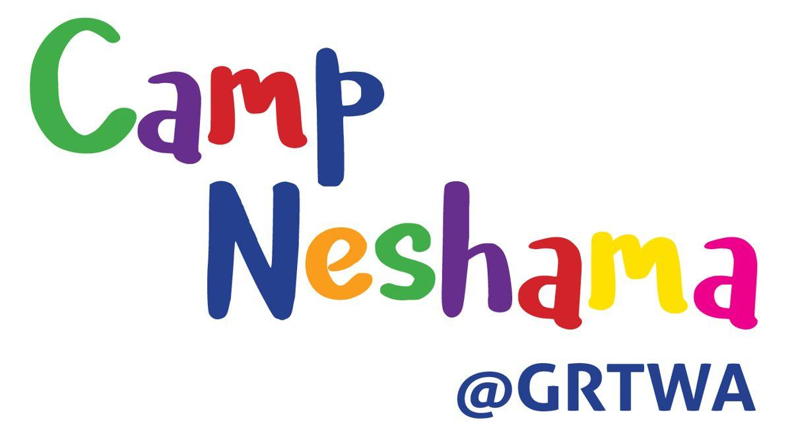

Infants through 8th grade, one connected journey.
A challenging, integrated dual curriculum in General Studies and Judaic Studies, with technology, the arts, and environmentalism woven throughout.

Nurturing the whole child, from infancy to Junior Kindergarten.
A developmentally based program for infants through Junior Kindergarten. Creative, engaging teachers provide project-based and interactive experiences through which children grow cognitively, socially, emotionally, physically, spiritually, and technologically.
Infant Room (3–18 months)
Little Lions (3–24 months)
ECC1 (18–24 months)
ECC2 (Two-year-olds)
ECC3 (Three-year-olds)
Junior Kindergarten
New to Jewish preschool? Greater MetroWest Right Start provides a $1,000 gift voucher toward tuition for families enrolling for the first time.

A progressively challenging foundation for learning and life.
The dual curriculum is individualized, challenging, and integrated to ensure that students develop a love of learning, gain confidence as learners, and learn key foundation skills.
- Language arts: literature-based, with emphasis on phonetic awareness and decoding
- Math: algebra-based problem-solving, with enrichment for strong mathematical aptitude
- Science: hands-on labs taught by a specialist
- Hebrew: total immersion with TAL AM / TAL SELA, plus a Mechina option
- Israel & Tikkun Olam: weekly Israeli Rishonim visits and social action projects

Rigorous preparation and character for high school and beyond.
A strong departmentalized program with group instruction, a highly individualized academic program, and personalized high school transition services.
- Honors-level language arts and research paper writing
- Accelerated math; most 8th graders finish algebra or even geometry
- Hebrew with the NETA curriculum; Spanish; Jewish history including Holocaust studies
- Capstone educational trip to Israel in 8th grade
- High School Transition Coordinator guiding families from spring of 7th grade

Coding and making, starting at age three.
Students as young as three in the ECC and K–5 students are immersed in a robust bi-weekly science curriculum using ChromeBooks, iPads, Ozobots, Spheros, Bee Bots, and Lego Robotics to learn coding.
GRTWA is a recipient of the Dr Lynne B Harrison STEM Grant, supporting enriched Middle School STEM and after-school programming.

Visual arts, music, and drama, every day.
The art curriculum incorporates the elements of design: color, line, texture, pattern, and space. Through drawing, painting, ceramics, and mixed media, students are introduced to masters such as Van Gogh, Mondriaan, Matisse, and Monet.
Students learn vocal and performance skills, read basic music, and play instruments, with many performance opportunities, building creative, collaborative, and public speaking skills from an early age.

Participation, sportsmanship, and fun.
Athletic participation is encouraged from ECC through 8th grade. All students in 5th through 8th grade can compete in interscholastic co-ed sports, and during games, every student gets a chance to play.
The Lions compete against day schools and private schools of similar size in a non-conference league.

A strong Jewish identity that guides how students learn, lead, and live.
A solid foundation in Hebrew language, sacred text study (Torah, Prophets/Tanach), and the culture, history, traditions, and practices of the Jewish people.
- Total-immersion Modern Hebrew, with a Mechina program for later starters
- Weekly visits from Israeli Rishonim through the Federation program
- Tefillah, holiday celebrations, and lifecycle learning
- Character education: tzedakah, empathy, fairness, and Tikkun Olam


A summer camp bursting with fun and discovery.
A high-quality summer experience filled with joyful learning, hands-on exploration, and meaningful Jewish moments, blending play, creativity, and experiential Jewish education.
See it in person.
The best way to know GRTWA is to visit, tour, and observe a classroom.